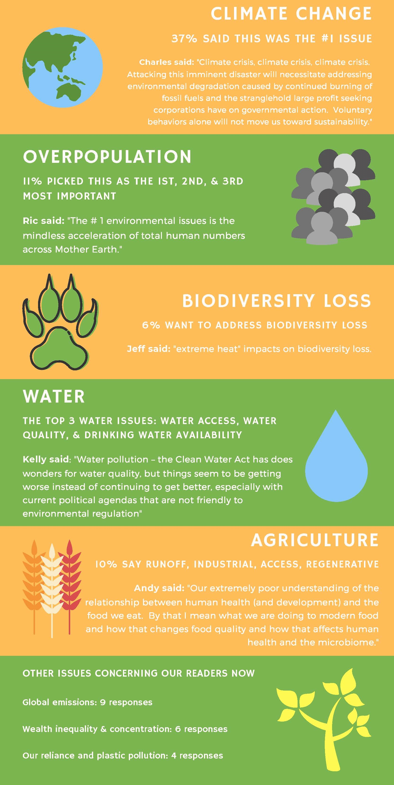

The environment inside buildings is linked to that outside by entrances (or exits), windows and chimneys. The environment inside the building has many facets. There is the support system provided by the facilities and various conveniences, besides information and communication systems set up to aid the links between the organisation inside and outside of the building. There is the social environment provided by the people themselves and there is the physical environment provided by the things we see, hear, touch, feel, and smell. The human senses are extraordinarily sensitive and it is through them that we experience life wherever we are. It seems sensible therefore to design the environment in buildings so that the senses are fulfilled and satisfied. The surroundings provide a rich context for the inputs to the human sensory systems. The idea of taking into account the senses of a building occupant has led to our research into how we smell, touch, hear and see things in a building, as well as our psychological interactions with them. Architecture deals not only with materials and form but also with people, emotion, space and relationships between them. Buildings should be a multi-sensory experience. The built environment should provide the triggers which stimulate the senses which is the foundation of sensory experience.
Understanding the environment that surrounds an organization is important to the executives in charge of the organizations. There are several reasons for this. First, the environment provides resources that an organization needs in order to create goods and services. In the seventeenth century, British poet John Donne famously noted that “no man is an island.” Similarly, it is accurate to say that no organization is self-sufficient. As the human body must consume oxygen, food, and water, an organization needs to take in resources such as labor, money, and raw materials from outside its boundaries. Subway, for example, simply would cease to exist without the contributions of the franchisees that operate its stores, the suppliers that provide food and other necessary inputs, and the customers who provide Subway with money through purchasing its products. An organization cannot survive without the support of its environment.
Second, the environment is a source of opportunities and threats for an organization. Opportunities are events and trends that create chances to improve an organization's performance level. In the late 1990s, for example, Jared Fogle's growing fame created an opportunity for Subway to position itself as a healthy alternative to traditional fast-food restaurants. Threats are events and trends that may undermine an organization's performance. Subway faces a threat from some upstart restaurant chains. Saladworks, for example, offers a variety of salads that contain fewer than five hundred calories. Noodles and Company offers a variety of sandwiches, pasta dishes, and salads that contain fewer than four hundred calories. These two firms are much smaller than Subway, but they could grow to become substantial threats to Subway's positioning as a healthy eatery.
Executives must also realize that virtually any environmental trend or event is likely to create opportunities for some organizations and threats for others. This is true even in extreme cases. In addition to horrible human death and suffering, the March 2011 earthquake and tsunami in Japan devastated many organizations, ranging from small businesses that were simply wiped out to corporate giants such as Toyota whose manufacturing capabilities were undermined. As odd as it may seem, however, these tragic events also opened up significant opportunities for other organizations. The rebuilding of infrastructure and dwellings requires concrete, steel, and other materials. Japanese concrete manufacturers, steelmakers, and construction companies are likely to be very busy in the years ahead. Third, the environment shapes the various strategic decisions that executives make as they attempt to lead their organizations to success. The environment often places important constraints on an organization's goals, for example. A firm that sets a goal of increasing annual sales by 50 percent might struggle to achieve this goal during an economic recession or if several new competitors enter its business. Environmental conditions also need to be taken into account when examining whether to start doing business in a new country, whether to acquire another company, and whether to launch an innovative product, to name just a few.